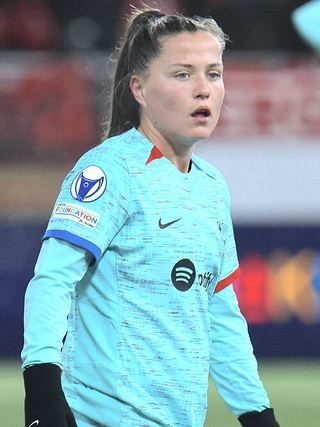

Ezzcoins › Player pages › Claudia Pina (Thunderstruck)

91
LW

Claudia Pina
PAC93
SHO92
PAS87
DRI90
DEF47
PHY75
PlayStyles
Finesse ShotGamechangerIncisive PassTiki TakaTechnicalQuick StepThunderstruck
Claudia Pina
91 LW · FC Barcelona · Liga F ·  Spain
Spain
4,450,000Recent console price
96Meta rating · ST +5 vs overall
ST96LW94LM94
PAC93
SHO92
PAS87
DRI90
DEF47
PHY75
Chemistry style
Turn on JavaScript to see this card with each chemistry style.
- Card
- Thunderstruck
- Added
- 27 Nov 2026
- Position
- LW (also LM, ST)
- Club
- FC Barcelona
- League
- Liga F
- Nation
- Spain
- Skill moves
- 4★
- Weak foot
- 5★
- PlayStyles+
- Low Driven Shot+
- PlayStyles
- Finesse Shot, Gamechanger, Incisive Pass, Tiki Taka, Technical, Quick Step
- Base card
- 89 LW ›
Meta rating: Ezzcoins' own estimate of how well this card plays in game, worked out from its stats for each position it can play, its skill moves, weak foot and PlayStyle+. An average card scores about its overall rating; higher means it plays above its rating.
Watch on Ezzcoins